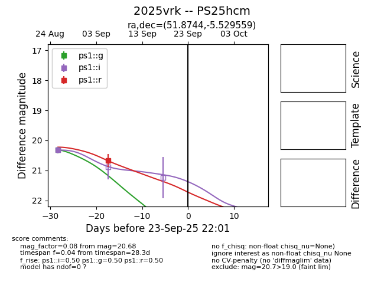
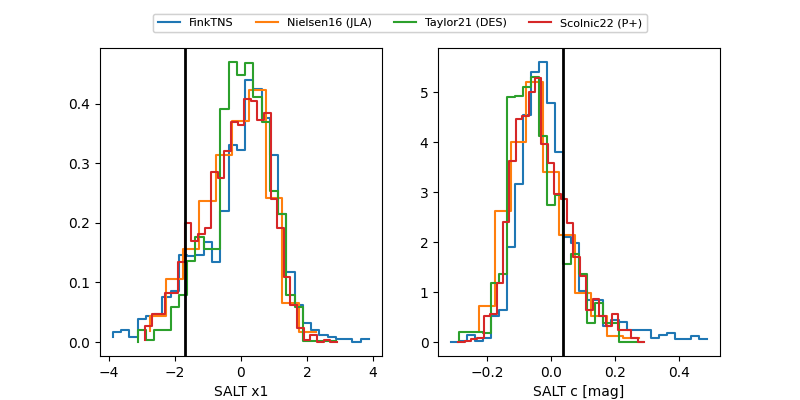

TNS: 2025vrk
YSE: 2025vrk
2025vrk (yse,tns)
PS25hcm (panstarrs)
equatorial (ra, dec) = (51.8744,-5.52956)
galactic (l, b) = (189.8614,-47.07323)


last ps1::g=20.31, ps1::i=20.32, ps1::r=20.68
1 ps1::g, 1 ps1::i, 1 ps1::r detections